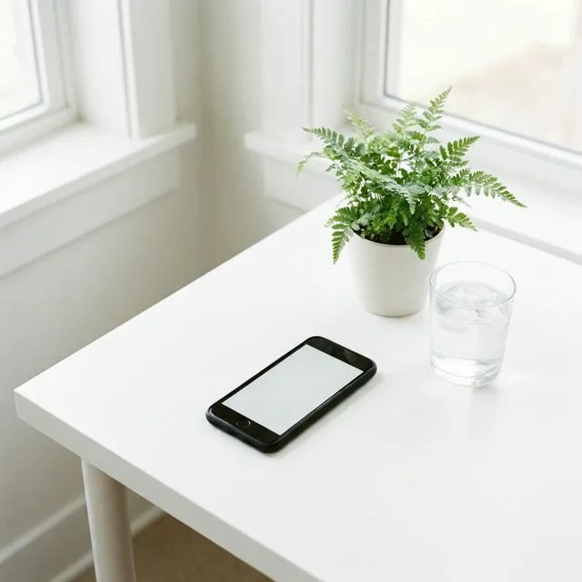

Ψηφιακός Μινιμαλισμός: Ανακτήστε την Προσοχή Σας


Δημιουργός, TimerHaven
Ζούμε ένα άνευ προηγουμένου πείραμα στην ανθρώπινη ψυχολογία. Για πρώτη φορά στην ιστορία, κουβαλάμε στις τσέπες μας συσκευές σχεδιασμένες από χιλιάδες μηχανικούς ειδικά για να καταλάβουν την προσοχή μας για κέρδος. Ο ψηφιακός μινιμαλισμός είναι η αντεπανάσταση.
Επινοημένος από τον συγγραφέα Cal Newport, ο Ψηφιακός Μινιμαλισμός είναι μια φιλοσοφία χρήσης της τεχνολογίας κατά την οποία εστιάζετε τον χρόνο σας στο διαδίκτυο σε έναν μικρό αριθμό προσεκτικά επιλεγμένων και βελτιστοποιημένων δραστηριοτήτων που υποστηρίζουν έντονα τα πράγματα που εκτιμάτε, και στη συνέχεια χάνετε ευχάριστα όλα τα άλλα.
Το κόστος της οικονομίας της προσοχής
Όταν μια εφαρμογή είναι "δωρεάν", εσείς είστε το προϊόν. Η προσοχή σας είναι το νόμισμα. Κάθε ειδοποίηση, κάθε ατελείωτη κύλιση και κάθε "like" είναι ένα χτύπημα ντοπαμίνης σχεδιασμένο για να σας κρατήσει στην πλατφόρμα. Το κόστος δεν είναι μόνο χρόνος—είναι η ικανότητά σας να σκέφτεστε βαθιά, να είστε παρόντες με τους αγαπημένους σας και να διατηρείτε ψυχική ισορροπία.
(Κατακερματισμός)
Οι συνεχείς διακοπές εμποδίζουν τον εγκέφαλο από το να φτάσει σε καταστάσεις "Βαθιάς Εργασίας" (Deep Work), οδηγώντας σε πνευματική κόπωση και χαμηλότερη ποιότητα παραγωγής.
Κοινωνική Σύγκριση
Αλγοριθμικά επιμελημένα "βίντεο με τις καλύτερες στιγμές" της ζωής των άλλων δημιουργούν μια διαστρεβλωμένη αίσθηση της πραγματικότητας και καλλιεργούν άγχος.
Ένα πλαίσιο για ψηφιακή εκκαθάριση
1. Η Επαναφορά των 30 Ημερών
Ο Newport συνιστά μια "ψηφιακή εκκαθάριση": για 30 ημέρες, κάντε ένα διάλειμμα από όλες τις προαιρετικές τεχνολογίες στη ζωή σας. Αυτό περιλαμβάνει τα μέσα κοινωνικής δικτύωσης, τους ιστότοπους ειδήσεων και τυχόν εφαρμογές που δεν είναι κρίσιμες για την εργασία σας ή τη βασική λειτουργία σας. Χρησιμοποιήστε αυτόν τον χρόνο για να ανακαλύψετε ξανά υψηλής ποιότητας αναλογικές δραστηριότητες—διάβασμα, πεζοπορία ή εκμάθηση μιας τέχνης.
2. Ορίστε τους Τεχνολογικούς "Όρους Εμπλοκής" Σας
Μετά τις 30 ημέρες, μην αφήσετε απλώς τις εφαρμογές να επιστρέψουν. Ρωτήστε: "Αυτό το εργαλείο υποστηρίζει μια βαθιά ριζωμένη αξία;" Εάν ναι, ορίστε πότε και πώς θα το χρησιμοποιήσετε.
- Instagram: Μόνο τα πρωινά του Σαββάτου μέσω επιτραπέζιου υπολογιστή (αφαιρεί τον εθιστικό κύλινδρο κινητού).
- Email: Μόνο στις 10:00 π.μ. και 4:00 μ.μ. (αποτρέπει τη συνεχή εναλλαγή περιβάλλοντος).
- Ειδήσεις: 15 λεπτά την ημέρα κατά τη διάρκεια του μεσημεριανού γεύματος (αποφεύγει την "καταστροφολογία").
3. Αγκαλιάστε την Πλήξη
Έχουμε χάσει την ικανότητα να είμαστε μόνοι με τις σκέψεις μας. Κάθε φορά που αντιμετωπίζουμε μια μικρο-στιγμή πλήξης—περιμένοντας για ένα ασανσέρ ή στέκοντας στην ουρά—πιάνουμε τα τηλέφωνά μας. Οι ψηφιακοί μινιμαλιστές εξασκούνται στο να είναι άνετοι χωρίς διέγερση, επιτρέποντας στο "δίκτυο προεπιλεγμένης λειτουργίας" του εγκεφάλου να εμπλακεί σε σκέψη.
Γιατί το TimerHaven είναι Κατασκευασμένο για Μινιμαλιστές
Οι περισσότερες εφαρμογές παραγωγικότητας σήμερα αποσπούν ειρωνικά την προσοχή. Είναι γεμάτες με κοινωνικά χαρακτηριστικά, συστήματα παιχνιδοποίησης και ατελείωτες επιλογές διαμόρφωσης που γίνονται μια μορφή "παραγωγικής αναβλητικότητας".
Στο TimerHaven, ακολουθούμε τον κανόνα της "Μίας Δουλειάς". Τα εργαλεία μας δεν έχουν λογαριασμούς, κοινωνικές ροές ή ειδοποιήσεις. Υπάρχουν μόνο όταν τα χρειάζεστε για να κάνετε μια συγκεκριμένη εργασία:
- Χρονόμετρο Pomodoro: Καθαρή εστίαση, χωρίς ρυθμίσεις για να παίξετε.
- Σημειώσεις: Καταγράψτε σκέψεις και επιστρέψτε στη ζωή. Χωρίς καθυστέρηση συγχρονισμού cloud.
- Ιχνηλάτης Συνηθειών: Οπτική λογοδοσία χωρίς την πίεση του "σερί".
Έτοιμοι για μια Πιο Καθαρή Ψηφιακή Ζωή;
Ξεκινήστε αντικαθιστώντας τις περίπλοκες, γεμάτες ειδοποιήσεις εφαρμογές σας με τα απλά, φιλικά προς την ιδιωτικότητα εργαλεία μας.
Εξερευνήστε τα ΕργαλείαΠρακτικά Βήματα Εξειδίκευσης
- Απενεργοποιήστε ΟΛΕΣ τις μη ανθρώπινες ειδοποιήσεις: Εάν δεν είναι ένα πραγματικό άτομο που προσπαθεί να επικοινωνήσει μαζί σας επειγόντως, δεν θα πρέπει να χτυπάει.
- Κάντε την οθόνη σας ασπρόμαυρη: Η αφάιρεση του χρώματος κάνει το τηλέφωνό σας σημαντικά λιγότερο ελκυστικό στα κέντρα ανταμοιβής του εγκεφάλου σας.
- Αφήστε το τηλέφωνό σας στο σπίτι: Ξεκινήστε με έναν 15λεπτο περίπατο χωρίς τη συσκευή σας. Χτίστε μέχρι ένα ολόκληρο απόγευμα.